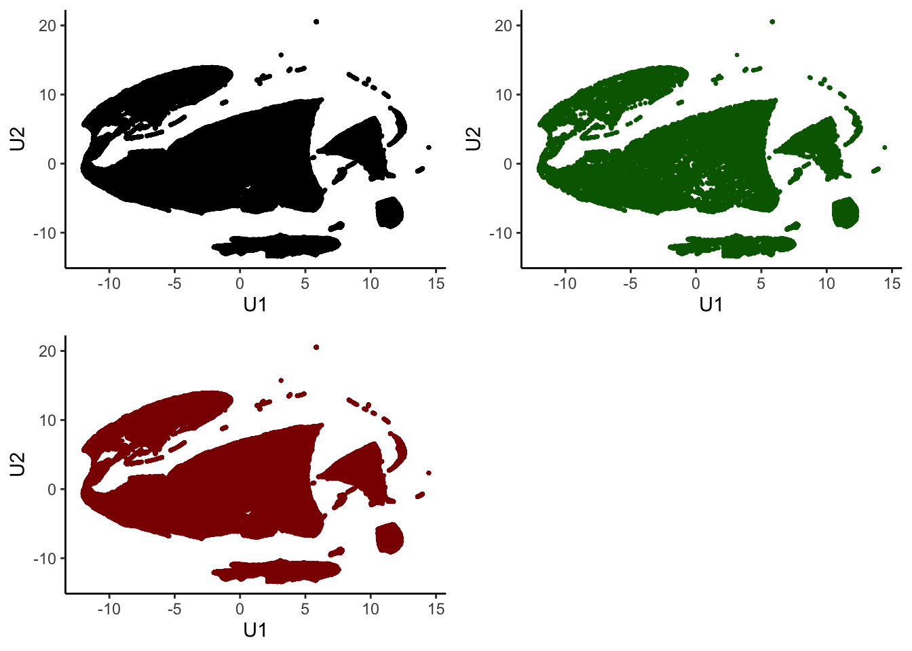
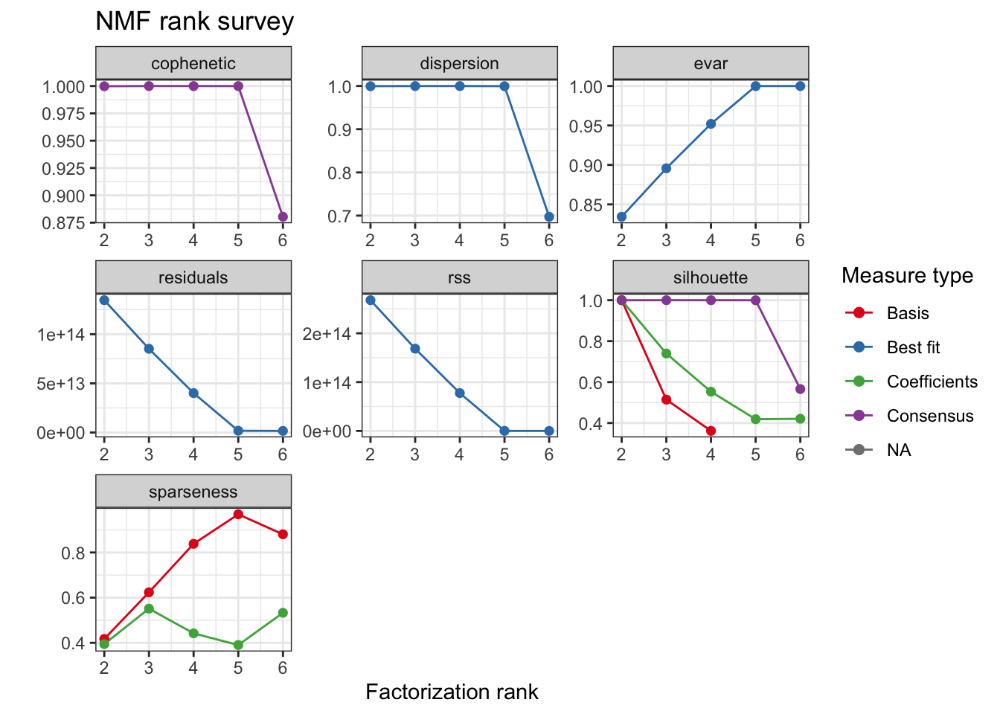
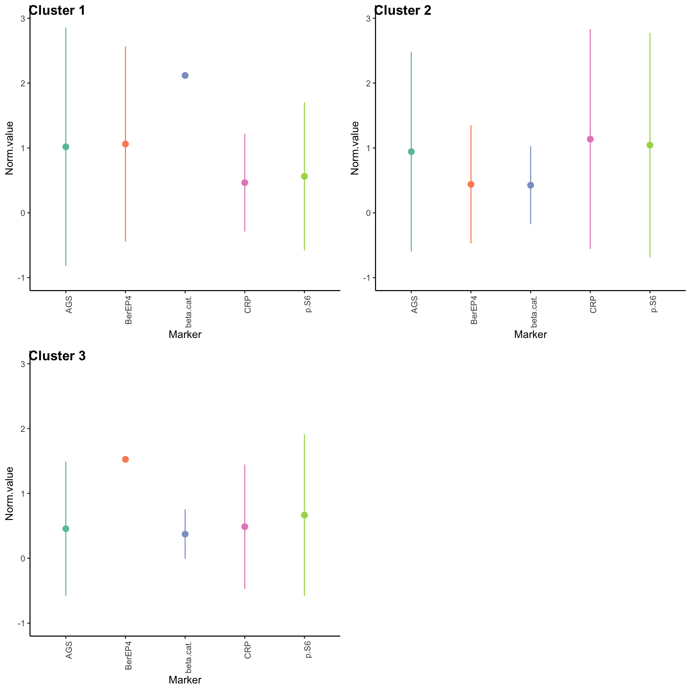
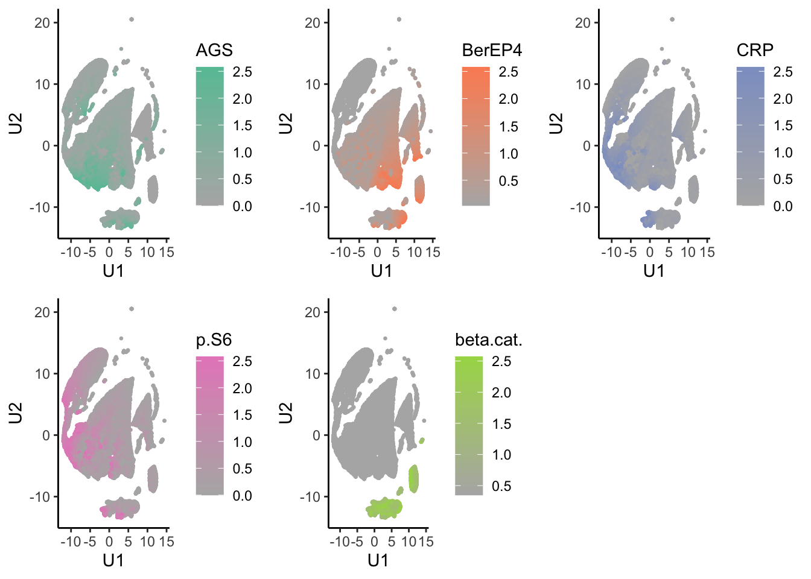
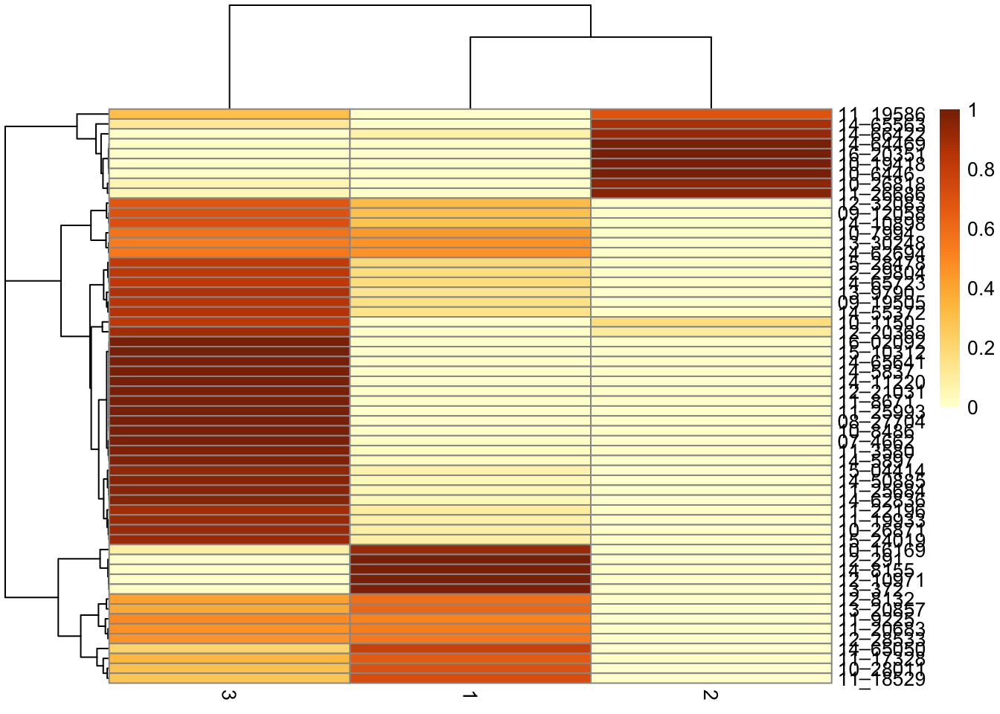

cores
Jovan Tanevski
2021-09-21
Last updated: 2021-09-21
Checks: 7 0
Knit directory: Multispectral HCC/
This reproducible R Markdown analysis was created with workflowr (version 1.6.2). The Checks tab describes the reproducibility checks that were applied when the results were created. The Past versions tab lists the development history.
Great! Since the R Markdown file has been committed to the Git repository, you know the exact version of the code that produced these results.
Great job! The global environment was empty. Objects defined in the global environment can affect the analysis in your R Markdown file in unknown ways. For reproduciblity it’s best to always run the code in an empty environment.
The command set.seed(20210728) was run prior to running the code in the R Markdown file. Setting a seed ensures that any results that rely on randomness, e.g. subsampling or permutations, are reproducible.
Great job! Recording the operating system, R version, and package versions is critical for reproducibility.
Nice! There were no cached chunks for this analysis, so you can be confident that you successfully produced the results during this run.
Great job! Using relative paths to the files within your workflowr project makes it easier to run your code on other machines.
Great! You are using Git for version control. Tracking code development and connecting the code version to the results is critical for reproducibility.
The results in this page were generated with repository version c0348fd. See the Past versions tab to see a history of the changes made to the R Markdown and HTML files.
Note that you need to be careful to ensure that all relevant files for the analysis have been committed to Git prior to generating the results (you can use wflow_publish or wflow_git_commit). workflowr only checks the R Markdown file, but you know if there are other scripts or data files that it depends on. Below is the status of the Git repository when the results were generated:
Ignored files:
Ignored: .DS_Store
Ignored: .Rhistory
Ignored: .Rproj.user/
Ignored: analysis/.DS_Store
Ignored: analysis/figure/
Ignored: code/
Ignored: data/
Ignored: old/
Ignored: output/
Note that any generated files, e.g. HTML, png, CSS, etc., are not included in this status report because it is ok for generated content to have uncommitted changes.
These are the previous versions of the repository in which changes were made to the R Markdown (analysis/cores.Rmd) and HTML (docs/cores.html) files. If you’ve configured a remote Git repository (see ?wflow_git_remote), click on the hyperlinks in the table below to view the files as they were in that past version.
| File | Version | Author | Date | Message |
|---|---|---|---|---|
| Rmd | c0348fd | Jovan Tanevski | 2021-09-21 | add marker abundance plots |
| html | ecd871a | Jovan Tanevski | 2021-09-19 | Build site. |
| Rmd | 763678d | Jovan Tanevski | 2021-09-19 | umap cache, compression |
| html | 8b4d370 | Jovan Tanevski | 2021-09-18 | Build site. |
| Rmd | 6b335ff | Jovan Tanevski | 2021-09-18 | clean up |
| html | 438a57b | Jovan Tanevski | 2021-09-18 | Build site. |
| Rmd | 421ce3c | Jovan Tanevski | 2021-09-18 | add caching, bump cores to 10% |
| html | 99ca035 | Jovan Tanevski | 2021-09-17 | Build site. |
| Rmd | 201876f | Jovan Tanevski | 2021-09-17 | work with normalized data for profiles and de |
| Rmd | b67241d | Jovan Tanevski | 2021-09-17 | switch to snmf/r and lower rank |
| html | c85e3e6 | Jovan Tanevski | 2021-09-17 | Build site. |
| Rmd | 825c1f2 | Jovan Tanevski | 2021-09-17 | pilot run on 1% of hepatocytes from tumor cores |
| html | e7709fe | Jovan Tanevski | 2021-08-03 | Build site. |
| Rmd | 421cbc4 | Jovan Tanevski | 2021-08-03 | add cores analysis placeholder |
Setup
library(tidyverse)
library(skimr)
library(uwot)
library(limma)
library(NMF)
library(factoextra)
library(cowplot)tumor.hc <- read_csv("data/tumor_hepatocytes.csv", col_types = cols()) %>%
select(
`Cytoplasm AGS (Opal 690) Mean (Normalized Counts, Total Weighting)`,
`Cytoplasm BerEP4 (Opal 650) Mean (Normalized Counts, Total Weighting)`,
`Cytoplasm CRP (Opal 540) Mean (Normalized Counts, Total Weighting)`,
`Nucleus p-S6 (Opal 570) Mean (Normalized Counts, Total Weighting)`,
`Nucleus beta-cat. (Opal 520) Mean (Normalized Counts, Total Weighting)`
) %>%
`colnames<-`(str_split(colnames(.), " ") %>% map_chr(~ .x[2]) %>% make.names())
skim(tumor.hc)| Name | tumor.hc |
| Number of rows | 223846 |
| Number of columns | 5 |
| _______________________ | |
| Column type frequency: | |
| numeric | 5 |
| ________________________ | |
| Group variables | None |
Variable type: numeric
| skim_variable | n_missing | complete_rate | mean | sd | p0 | p25 | p50 | p75 | p100 | hist |
|---|---|---|---|---|---|---|---|---|---|---|
| AGS | 0 | 1 | 0.27 | 0.41 | 0 | 0.07 | 0.12 | 0.25 | 5.23 | ▇▁▁▁▁ |
| BerEP4 | 0 | 1 | 1.09 | 2.19 | 0 | 0.21 | 0.32 | 0.58 | 24.08 | ▇▁▁▁▁ |
| CRP | 0 | 1 | 2.51 | 3.08 | 0 | 0.55 | 1.00 | 3.50 | 35.80 | ▇▁▁▁▁ |
| p.S6 | 0 | 1 | 1.31 | 1.25 | 0 | 0.58 | 0.94 | 1.61 | 35.24 | ▇▁▁▁▁ |
| beta.cat. | 0 | 1 | 0.06 | 0.14 | 0 | 0.00 | 0.00 | 0.05 | 4.04 | ▇▁▁▁▁ |
Detect outliers based on Tukey’s interquartile approach and winsorize. Follow by quantile normalization and ranking to get rid of the effect of abundance
quartiles <- apply(tumor.hc, 2, \(x) quantile(x, c(.25, .75)))
lower <- quartiles[1, ] - 1.5 * (quartiles[2, ] - quartiles[1, ])
upper <- quartiles[2, ] + 1.5 * (quartiles[2, ] - quartiles[1, ])
tumor.hc.winsorized <- tumor.hc %>% imap_dfc(\(x, y){
x[x < lower[y]] <- x[which.min(x - lower[y])]
x[x > upper[y]] <- x[which.min(x - upper[y])]
x
})
skim(tumor.hc.winsorized)| Name | tumor.hc.winsorized |
| Number of rows | 223846 |
| Number of columns | 5 |
| _______________________ | |
| Column type frequency: | |
| numeric | 5 |
| ________________________ | |
| Group variables | None |
Variable type: numeric
| skim_variable | n_missing | complete_rate | mean | sd | p0 | p25 | p50 | p75 | p100 | hist |
|---|---|---|---|---|---|---|---|---|---|---|
| AGS | 0 | 1 | 0.12 | 0.11 | 0 | 0.05 | 0.10 | 0.17 | 0.52 | ▇▃▂▁▁ |
| BerEP4 | 0 | 1 | 0.29 | 0.22 | 0 | 0.14 | 0.25 | 0.39 | 1.15 | ▇▆▂▁▁ |
| CRP | 0 | 1 | 1.67 | 1.93 | 0 | 0.45 | 0.82 | 2.12 | 7.93 | ▇▁▁▁▁ |
| p.S6 | 0 | 1 | 1.01 | 0.71 | 0 | 0.50 | 0.83 | 1.38 | 3.16 | ▇▇▃▂▁ |
| beta.cat. | 0 | 1 | 0.01 | 0.03 | 0 | 0.00 | 0.00 | 0.00 | 0.13 | ▇▁▁▁▁ |
tumor.hc.norm <- normalizeQuantiles(data.frame(tumor.hc.winsorized))
skim(tumor.hc.norm)| Name | tumor.hc.norm |
| Number of rows | 223846 |
| Number of columns | 5 |
| _______________________ | |
| Column type frequency: | |
| numeric | 5 |
| ________________________ | |
| Group variables | None |
Variable type: numeric
| skim_variable | n_missing | complete_rate | mean | sd | p0 | p25 | p50 | p75 | p100 | hist |
|---|---|---|---|---|---|---|---|---|---|---|
| AGS | 0 | 1 | 0.61 | 0.60 | 0.00 | 0.23 | 0.40 | 0.81 | 2.58 | ▇▂▁▁▁ |
| BerEP4 | 0 | 1 | 0.62 | 0.60 | 0.03 | 0.23 | 0.40 | 0.81 | 2.58 | ▇▂▁▁▁ |
| CRP | 0 | 1 | 0.62 | 0.59 | 0.00 | 0.23 | 0.40 | 0.81 | 2.58 | ▇▂▁▁▁ |
| p.S6 | 0 | 1 | 0.62 | 0.59 | 0.00 | 0.23 | 0.40 | 0.81 | 2.58 | ▇▂▁▁▁ |
| beta.cat. | 0 | 1 | 0.55 | 0.54 | 0.35 | 0.35 | 0.35 | 0.35 | 2.57 | ▇▁▁▁▁ |
tumor.hc.rank <- mutate_all(tumor.hc.winsorized, ~ rank(., ties.method = "min"))Pilot run. Subsample 10% of the original data.
set.seed(42)
percent <- 10
subsamp <- sample(nrow(tumor.hc.rank), (percent / 100) * nrow(tumor.hc.rank))Dimensionality reduction
cache <- "output/tumor.hc.umap.rds"
if (file.exists(cache)) {
tumor.hc.umap <- read_rds(cache)
} else {
tumor.hc.umap <- umap(tumor.hc.norm, n_threads = 5)
write_rds(tumor.hc.umap, cache, "gz")
}Check if sample is representative in UMAP space
tumor.hc.umap.sample <-
tumor.hc.umap %>%
`colnames<-`(c("U1", "U2")) %>%
as_tibble()
all <- ggplot(tumor.hc.umap.sample, aes(x = U1, y = U2)) +
geom_point(size = 0.5) +
theme_classic()
sampled <- ggplot(tumor.hc.umap.sample %>% slice(subsamp), aes(x = U1, y = U2)) +
geom_point(color = "darkgreen", size = 0.5) +
theme_classic()
unsampled <- ggplot(tumor.hc.umap.sample %>% slice(-subsamp), aes(x = U1, y = U2)) +
geom_point(color = "darkred", size = 0.5) +
theme_classic()
plot_grid(all, sampled, unsampled)
| Version | Author | Date |
|---|---|---|
| 8b4d370 | Jovan Tanevski | 2021-09-18 |
Consensus NMF
We use an efficient implementation of alternating non negative least-squares with regularized to favor sparse coefficient matrices snmf/r. In this way we aim for cleaner clustering.
cache <- paste0("output/tumor.hc.nmf.rank.", percent, ".rds")
if (file.exists(cache)) {
tumor.hc.nmf.rank <- read_rds(cache)
} else {
tumor.hc.nmf.rank <- nmfEstimateRank(as.matrix(t(tumor.hc.rank[subsamp, ])),
range = seq(2, 6), method = "snmf/r",
nrun = 10, seed = 42, verbose = TRUE,
.options = "mp5"
)
write_rds(tumor.hc.nmf.rank, cache, "gz")
}
plot(tumor.hc.nmf.rank)Warning: Removed 2 rows containing missing values (geom_point).
| Version | Author | Date |
|---|---|---|
| 8b4d370 | Jovan Tanevski | 2021-09-18 |
tumor.hc.nmf <- tumor.hc.nmf.rank$fit[["3"]]
rm(tumor.hc.nmf.rank)Extract basis of NMF (signature of cluster)
basismap(tumor.hc.nmf)
| Version | Author | Date |
|---|---|---|
| 8b4d370 | Jovan Tanevski | 2021-09-18 |
Extract coefficients of NMF (soft clustering of samples) if a reasonable amount of cells is subselected.
if (percent <= 2) coefmap(tumor.hc.nmf)Assign clusters
nmf.clusters <- apply(tumor.hc.nmf@fit@H, 2, which.max)Plot in 2D PCA and UMAP
tumor.hc.umap.clus <-
tumor.hc.umap.sample %>%
slice(subsamp) %>%
mutate(Cluster = as.factor(nmf.clusters))
ggplot(tumor.hc.umap.clus, aes(x = U1, y = U2, color = Cluster)) +
geom_point(size = 0.5) +
theme_classic()
| Version | Author | Date |
|---|---|---|
| 8b4d370 | Jovan Tanevski | 2021-09-18 |
Expression profiles per cluster
tumor.hc.clustered.nmf <- tumor.hc.norm[subsamp, ] %>%
mutate(Cluster = as.factor(nmf.clusters)) %>%
pivot_longer(names_to = "Marker", values_to = "Norm.value", -Cluster)
profiles <- seq_len(max(nmf.clusters)) %>% map(~
ggplot(
tumor.hc.clustered.nmf %>% filter(Cluster == .x),
aes(x = Marker, y = Norm.value, color = Marker)
) +
stat_summary(fun.data = mean_sdl, show.legend = FALSE) +
scale_color_brewer(palette = "Set2") +
ylim(-1, 3) +
theme_classic() +
theme(axis.text.x = element_text(angle = 90, hjust = 1)))
plot_grid(plotlist = profiles, labels = paste("Cluster", seq_len(max(nmf.clusters))))
| Version | Author | Date |
|---|---|---|
| 8b4d370 | Jovan Tanevski | 2021-09-18 |
Marker abundance plots
tumor.hc.umap.markers <- tumor.hc.norm %>%
bind_cols(tumor.hc.umap.sample) %>%
slice(subsamp)
low <- RColorBrewer::brewer.pal(8, "Set2")[8]
highs <- RColorBrewer::brewer.pal(8, "Set2")[seq_len(ncol(tumor.hc.norm))]
tumor.hc.umap.markers.plots <- colnames(tumor.hc.norm) %>%
map2(highs, \(marker, color){
ggplot(tumor.hc.umap.markers, aes_string(x = "U1", y = "U2", color = marker)) +
geom_point(size = 0.5) +
scale_color_gradient(low = low, high = color) +
theme_classic()
})
plot_grid(plotlist = tumor.hc.umap.markers.plots)
| Version | Author | Date |
|---|---|---|
| 8b4d370 | Jovan Tanevski | 2021-09-18 |
Differential expression analysis (silhouette)
Calculate the similarity of samples using the expression and the silhouette scores based on the assigned clusters.
silhouette.nmf <- silhouette(nmf.clusters, dist(tumor.hc.norm[subsamp, ]))
fviz_silhouette(silhouette.nmf) cluster size ave.sil.width
1 1 7514 0.23
2 2 2917 0.20
3 3 11953 0.08
Select only the samples with positive silhouette scores as “core samples”
core.samples <- which(silhouette.nmf[, 3] > 0)
tumor.hc.core.samples <- tumor.hc.norm[subsamp, ] %>%
add_column(Cluster = nmf.clusters) %>%
slice(core.samples)Calculate difference in means (mean(cluster) - mean(other)), one-vs-all t-test per marker and correct for FDR. Filter q <= 0.05
unique(tumor.hc.core.samples$Cluster) %>%
map_dfr(\(c){
tumor.hc.core.samples %>%
summarize(across(-Cluster, ~ t.test(.x ~ (Cluster == c))$p.value)) %>%
pivot_longer(names_to = "Marker", values_to = "p", everything()) %>%
mutate(Cluster = c, Difference = tumor.hc.core.samples %>%
group_by(Cluster == c) %>%
select(-Cluster) %>%
group_split(.keep = FALSE) %>% map(colMeans) %>% reduce(`-`))
}) %>%
mutate(q = p.adjust(p, method = "fdr"), Difference = -Difference) %>%
filter(q <= 0.05) %>%
arrange(q)| Marker | p | Cluster | Difference | q |
|---|---|---|---|---|
| BerEP4 | 0 | 1 | 0.5355128 | 0 |
| CRP | 0 | 1 | -0.4195431 | 0 |
| p.S6 | 0 | 1 | -0.5492064 | 0 |
| beta.cat. | 0 | 1 | -0.3729937 | 0 |
| BerEP4 | 0 | 3 | -0.7130270 | 0 |
| CRP | 0 | 3 | 0.4656048 | 0 |
| p.S6 | 0 | 3 | 0.6179561 | 0 |
| beta.cat. | 0 | 3 | -0.4166215 | 0 |
| beta.cat. | 0 | 2 | 1.5739034 | 0 |
| BerEP4 | 0 | 2 | 0.4125943 | 0 |
| AGS | 0 | 3 | 0.1783628 | 0 |
| AGS | 0 | 1 | -0.1501966 | 0 |
| p.S6 | 0 | 2 | -0.1922239 | 0 |
| CRP | 0 | 2 | -0.1336820 | 0 |
| AGS | 0 | 2 | -0.0716550 | 0 |
sessionInfo()R version 4.1.1 (2021-08-10)
Platform: x86_64-apple-darwin17.0 (64-bit)
Running under: macOS Big Sur 10.16
Matrix products: default
BLAS: /Library/Frameworks/R.framework/Versions/4.1/Resources/lib/libRblas.0.dylib
LAPACK: /Library/Frameworks/R.framework/Versions/4.1/Resources/lib/libRlapack.dylib
locale:
[1] en_US.UTF-8/en_US.UTF-8/en_US.UTF-8/C/en_US.UTF-8/en_US.UTF-8
attached base packages:
[1] parallel stats graphics grDevices utils datasets methods
[8] base
other attached packages:
[1] RColorBrewer_1.1-2 cowplot_1.1.1 factoextra_1.0.7
[4] NMF_0.23.0 synchronicity_1.3.5 bigmemory_4.5.36
[7] Biobase_2.52.0 BiocGenerics_0.38.0 cluster_2.1.2
[10] rngtools_1.5 pkgmaker_0.32.2 registry_0.5-1
[13] limma_3.48.3 uwot_0.1.10 Matrix_1.3-4
[16] skimr_2.1.3 forcats_0.5.1 stringr_1.4.0
[19] dplyr_1.0.7 purrr_0.3.4 readr_2.0.1
[22] tidyr_1.1.3 tibble_3.1.4 ggplot2_3.3.5
[25] tidyverse_1.3.1 workflowr_1.6.2
loaded via a namespace (and not attached):
[1] bigmemory.sri_0.1.3 colorspace_2.0-2 ggsignif_0.6.3
[4] rio_0.5.27 ellipsis_0.3.2 rprojroot_2.0.2
[7] htmlTable_2.2.1 base64enc_0.1-3 fs_1.5.0
[10] rstudioapi_0.13 ggpubr_0.4.0 farver_2.1.0
[13] ggrepel_0.9.1 bit64_4.0.5 fansi_0.5.0
[16] lubridate_1.7.10 xml2_1.3.2 codetools_0.2-18
[19] splines_4.1.1 doParallel_1.0.16 knitr_1.34
[22] Formula_1.2-4 jsonlite_1.7.2 broom_0.7.9
[25] gridBase_0.4-7 dbplyr_2.1.1 png_0.1-7
[28] compiler_4.1.1 httr_1.4.2 backports_1.2.1
[31] assertthat_0.2.1 fastmap_1.1.0 cli_3.0.1
[34] later_1.3.0 htmltools_0.5.2 tools_4.1.1
[37] gtable_0.3.0 glue_1.4.2 reshape2_1.4.4
[40] Rcpp_1.0.7 carData_3.0-4 cellranger_1.1.0
[43] jquerylib_0.1.4 vctrs_0.3.8 iterators_1.0.13
[46] xfun_0.26 openxlsx_4.2.4 rvest_1.0.1
[49] lifecycle_1.0.0 rstatix_0.7.0 scales_1.1.1
[52] vroom_1.5.5 hms_1.1.0 promises_1.2.0.1
[55] curl_4.3.2 yaml_2.2.1 gridExtra_2.3
[58] sass_0.4.0 rpart_4.1-15 latticeExtra_0.6-29
[61] stringi_1.7.4 highr_0.9 foreach_1.5.1
[64] checkmate_2.0.0 zip_2.2.0 repr_1.1.3
[67] rlang_0.4.11 pkgconfig_2.0.3 evaluate_0.14
[70] lattice_0.20-44 htmlwidgets_1.5.4 labeling_0.4.2
[73] bit_4.0.4 tidyselect_1.1.1 plyr_1.8.6
[76] magrittr_2.0.1 R6_2.5.1 generics_0.1.0
[79] Hmisc_4.5-0 DBI_1.1.1 foreign_0.8-81
[82] pillar_1.6.2 haven_2.4.3 whisker_0.4
[85] withr_2.4.2 abind_1.4-5 nnet_7.3-16
[88] survival_3.2-13 car_3.0-11 modelr_0.1.8
[91] crayon_1.4.1 uuid_0.1-4 utf8_1.2.2
[94] tzdb_0.1.2 rmarkdown_2.11 jpeg_0.1-9
[97] grid_4.1.1 readxl_1.3.1 data.table_1.14.0
[100] git2r_0.28.0 reprex_2.0.1 digest_0.6.27
[103] xtable_1.8-4 httpuv_1.6.3 munsell_0.5.0
[106] bslib_0.3.0